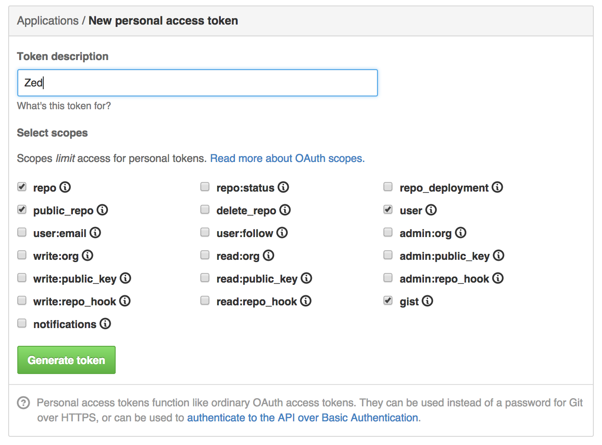

Create a Github token Create a Github token
Create a Github token Create a Github tokenIn order to use Github with Zed, you first need to create a new authentication token. You can do so by visiting the "Create token" page on Github (it's under your settings page > Applications > Personal access token > "Generate new token").
When creating the token, make sure at least the following scopes are enabled:
After you hit "Generate token", copy and paste copy and paste the token into the input field at the top of this screen and hit "Verify and save".